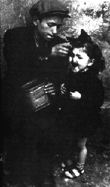

|
Doppelmord
von Dr. Rolf Kornemann
Die "Entjudung" von Wien
Eine der vermutlich umfangreichsten und systematischsten "Entjudungen" vollzog sich in Wien38). Ursächlich hierfür waren einerseits die unzulängliche Bautätigkeit, und zwar bereits vor Anschluß Österreichs an Deutschland, und andererseits die teilweise überdurchschnittlich gute Wohnungsversorgung der Juden im Vergleich zu den "Ariern". Alle Appelle an die "Kanzlei des Führers der NSDAP"39), die Bautätigkeit zu steigern, waren ungehört geblieben; im Juli 1939 wurde seitens der Wiener Stadtverwaltung der Fehlbestand auf ca. 70.000 Wohnungen geschätzt.
15 Monate zuvor, im März 1938, d.h. im zeitlichen Zusammenhang mit der nationalsozialistischen Machtübernahme in Österreich, setzten die ersten
Verdrängungen der Juden ein. Während der Reichskristallnacht publiziert der
"Völkische Beobachter" Artikel, die mit der Überschrift
"Hinaus mit den Juden aus guten und billigen
Wohnungen"
betitelt waren40). Nach offiziösen Schätzungen dürften bis Mitte April 1939 bereits 50 % der 70.000 jüdischen Wohnungen arisiert worden sein41). Die Einweisung der Juden erfolgte häufig in Kellerräume oder "hofseitige Wohnungen", in leerstehende Geschäftslokale, Magazine etc.
Parallel zur Vertreibung jüdischer Mieter aus ihren Wohnungen wurden die Umsiedlungen in Ghettos vorbereitet. Im Mai 1939 wurde eine vollständige Bestandsaufnahme jüdischer Wohnungen Wiens begonnen. Im Sommer wurden erste Pläne, alle österreichischen Juden in Barackenlagern zu internieren, aufgestellt; solche Pläne eilten den Überlegungen des "Altreichs" voraus. Im Oktober wurden die Gedankengänge konkretisiert und erste Kostenschätzungen vorgelegt; pro Lager wurden die Errichtungskosten auf 3 Millionen Reichsmark beziffert. "Die laufenden Betriebskosten eines solchen Lagers für Unterhaltung der Baracken, Verwaltung und Bewachung, Verpflegung der Lagerinsassen usw. wurden unter Berücksichtigung der bei Judenlagern gegebenen Einsparungsmöglichkeiten mit 1,50 Reichsmark pro Person am Tag vorausgeschätzt. Zur Aufbringung sollte ... das noch vorhandene Judenvermögen herangezogen werden ..."42).
Die Arisierung jüdischer Wohnungen in Wien erwies sich als eine Ersatzfunktion für eine Sozialpolitik, die vom Nationalsozialismus - nicht zuletzt im Hinblick auf Wiederaufrüstung und Kriegsvorbereitung - nicht erbracht wurde. Insofern kann die Beschaffung von Wohnraum durch Vertreibung der Juden anstelle des Neubaus als ein Musterbeispiel "negativer Sozialpolitik" gelten. Der relativ hohe Anteil der Wiener Juden war dafür die Voraussetzung. Auf diese Weise wurden mehr Wohnungen freigezogen als innerhalb von 10 Jahren neu gebaut wurden43).
© Copyright by Dr. Rolf Kornemann
© Layout Birgit Pauli-Haack 1997
|